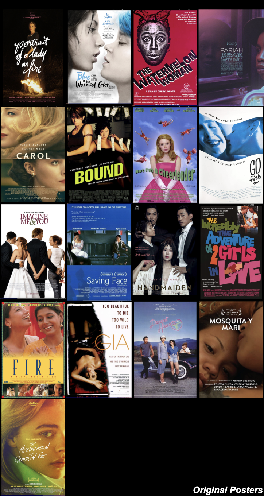
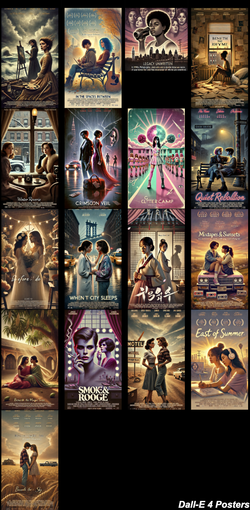
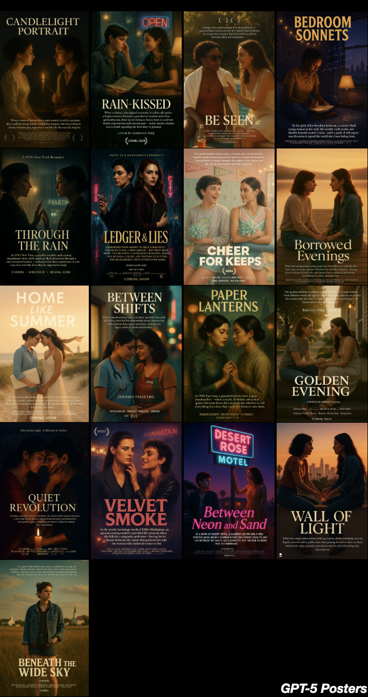
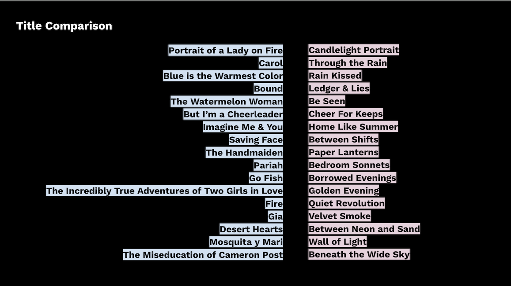

Queer Poster Bot: GenAI Film Posters & Title Comparison
How algorithms remix film posters and titles
The Original Posters

Among the 17 film titles used to generate image and text outputs, a variety of genres are represented. The original posters, as found on IMDb, are collected above. We can see a wide variety of design approaches, each reflecting the aesthetics of its time, yet all honoring any genre expectations viewers might have of the film poster. The title is prominently displayed, and an actor or actors in their roles or the ensemble are prominently presented, though not necessarily from a predictable perspective.
The background is more likely to be abstract, and sometimes color blocks or image frames contribute to the poster's overall aesthetic (e.g., Go Fish and Saving Face). Notably, in a majority of posters, the background is blurred or negligible, and close-ups of faces as well as constellations of one to four actors create variety in composition. Overall, the relationship between actors and title fonts creates the defining aesthetics of these posters.
If we look at the titles these fonts render, we can see a wider variety as well. The prevalence of single-word (Carol, Gia, Bound, Fire) and notably long titles (Portrait of a Lady on Fire, The Incredibly True Adventures of Two Girls in Love) defines this data set and perhaps reveals the genre's prevailing titling conventions.
Dall-E's Posters
As part of the experiment, I asked both models to create posters based on loglines they had produced, which were themselves based on images generated in response to the titles of the 17 films. This short chain of iterations might replicate a three-step remixing path that can show how training data is mobilized by GenAI. In addition to the poster request, I also asked the models to include a title on the poster.
Below is the grid of posters produced by Dall-E's legacy model. We can see that the film poster's genre features, as established in the set of original posters, have been abandoned. What emerges instead is a curious mixture of Dall-E's aesthetic particularities and romance novel covers.

Dall-E's tendency to focus on meticulously detailed backgrounds is a defining feature of these new posters. From ominous cloud cover to perfectly centered windows and mirrors to stereotypical geographical markers (see the Manhattan Bridge), the background takes on the responsibility of creating the emotional essence and expressiveness. Where actors' faces and emotional expressions did much of that work in the original posters, now a clearly defined landscape and curiously amber lighting take over. Also notable is the homogeneous perspective on the women. Moving further away from a focus on faces observed in a portion of the original posters, we now get either full-body or ¾ perspectives, and characters are almost exclusively presented as pairs or, in a small subgroup, as lonely figures.
When we look more closely at the figures themselves, the particular homogeneity of "hotness" is noticeable. Dall-E has been known to render women like versions of Barbie dolls, defaulting over and over again to a representation of women that is predominantly young, white, and physically standardized. Clothing and hair are what define these women as belonging to the 50s, earlier periods, or the present.
Also observable is a reduction in font variety, and the film's new titles are less prominently displayed. The new titles turn away from single names, and two-word variations abound. Bound is now Crimson Veil, Gia is Smoke and Rouge, But I'm a Cheerleader is now Glitter Camp, and The Incredibly True Adventures of Two Girls in Love is transformed into Mixtapes & Sunsets.
Overall, these renderings shifted towards markers of genre fiction, and the homogeneity in Dall-E's outputs flattened the variety we observed in the original poster set.
GPT-5's Posters
Having asked GPT-5 for the same outputs, a movie poster including a title based on a logline, we can observe GPT's rendering in comparison to Dall-E 4's, as well as in comparison to the original posters.

GPT-5's take on the prompt shows that some of Dall-E's tendencies towards particular homogenization have been mitigated. The hotness of the featured humans has been corrected to something more recognizable and less doll-like. Instead, an odd new homogeneity emerges in the figures. In many cases, the average woman rendered here is young, white, or racially ambiguous, and two women depicted noticeably resemble each other. In addition to the composition of the figures, centered and symmetrical (also notice how arms and hands are positioned to complete this symmetry), this model's renderings double down on the mirroring effect. This brings to mind the doppelganger trope, which names the depiction of Lesbian lovers as doppelgangers (Jenzen).
The meticulous rendering of the background produced by the previous model has been replaced by blurred color patches or hints of a less exciting landscape. In the absence of defined surroundings, lighting and color now entirely take over the role of creating ambience and emotional tenor. What color scheme a movie is assigned seems to depend fundamentally on the genre. A film deemed to be in the "drama" category is assigned a dark spectrum, arranged around an amber source of light, while comedies live in pastel tones. Fonts play along with this new basic genre distinction. Serif fonts for the darker themes; sans-serif for the lighter ones. The poster design options in this model seem more limited than before. Gone are even occasional overlays or atypical framings, and it seems the model's understanding of the movie poster is composed of distinct, separate elements that emerge as default building blocks rather than being created from a holistic concept.
Overall, the impression is one of a book cover created by a non-designer with little editorial wisdom. And again, it is less interesting to poke at the model's competency, but more useful to observe the patterns and defaults the algorithm mobilizes when left to make its own decisions. While each of these posters, seen separately, might serve its purpose, in aggregate, imagined as part of an output economy, these posters narrow our ability to imagine fuller, more nuanced stories of Lesbian women.
Title Comparison
Finally, we might observe the titles here as well.

The new titles have become interchangeable, and they transmit nothing but a very basic hint that what is to come will most likely be a genre romance. If original titles could be provocative (Pariah), or specific with allusion (The Miseducation of Cameron Post), these algorithmically tuned titles are edgeless, all-purpose word pairings, composites of preposition and weather condition, e.g., Through the Rain; Beneath the Wide Sky, and forgettable.
The loss of meaning that accompanies a loss of specificity is most striking and noticeable in the data set's films featuring protagonists of color: The Handmaiden became Paper Lanterns; The Watermelon Woman became Be Seen; and Pariah became Bedroom Sonnets.
To see these transformations in specific contexts, we can turn to a more thorough analysis presented in two Case Studies: Close-Up: Carol and Close-Up: Pariah.